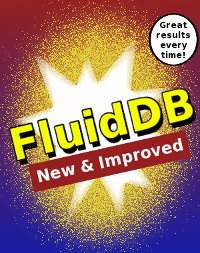

New Features in FluidDB

I now work for Fluidinfo the company behind FluidDB. I'm employee number three. Actually Guy #3 is an excellent job title and description of what I'm doing at Fluidinfo. (The lack of any posts to this blog is also an indication of how busy we are at Fluidinfo).
The fruits of our work are a new version of FluidDB that comes with several enhancements to the API. I want to describe two of them in this blog post: the addition of "/about" and "/values" based paths.
/about
Up until now, the only way to reference an object in a URL was through its ID (a rather hard-to-remember value called a uuid) similar to this:
https://fluiddb.fluidinfo.com/objects/6ba88bfa-df44-4338-8380-f513f27f22b7/ntoll/comment
As the example shows, remembering the URL to get specific tag values is difficult.
The addition of /about based paths allows you to reference an object using its unique fluiddb/about value (percent encoded in the URL). This means URLs suddenly become more meaningful and easy to remember. For example:
https://fluiddb.fluidinfo.com/about/an-example/ntoll/comment
as an alternative to the previous example.
Of course, it's possible to use all the usual HTTP methods to manipulate resources in much the same way as the existing /objects based API.
Full details can be found in the FluidDB API documentation.
/values
Until now, if you wanted to get, delete or update a set of values in FluidDB you had to do a request for each tag-value. This was a severe limitation.
For example, to return six fields on a result set of, say, 100 objects resulted in 601 requests to FluidDB (one initial query request to retrieve the result set and another 600 to get all the values). Not only did this make FluidDB work harder but is meant the client has to wait for all the requests to travel over the network introducing a painfully large amount of latency.
Happily, the new /values based API turns the example given above into a single request. Here's how:
GET
Those of you familiar with queries specified in the SQL language of conventional relational databases will know that they take the form:
SELECT column_name(s) FROM table_name WHERE column_name operator value
where a concrete example might be:
SELECT firstname, lastname, email FROM users WHERE group_id = 2
that returns a result similar to this:
| firstname | lastname | |
| Terry | Jones | terry@acme.com |
| Esteve | Fernandez | esteve@acme.com |
| Nicholas | Tollervey | nicholas@acme.com |
This demonstrates that to return multiple results you need to select values that belong to a record that matches some sort of constraint.
Here's how to do a similar query using an HTTP GET request to FluidDB's new /values api.
Obviously, since this is an HTTP GET request we're passing all the important arguments in the URL. Lets break down what each segment means:
- https://fluiddb.fluidinfo.com/values – indicates we're using the new /values api.
- ?query=has+fluidinfo%2Femployee – is the constraint used to identify the result set. The constraint is written in FluidDB's über-minimalist query language. Notice how the query has been percent encoded.
-
&tag=fluiddb/about&tag=fluiddb/users/username&tag=fluiddb/users/name&tag=fluidinfo/staffpic – for each object in the result set return the values associated with the following tags:
- fluiddb/about
- fluiddb/username
- fluiddb/name
- fluidinfo/staffpic
In plain English, we're asking FluidDB to return the about value, username, real name and staff picture attached to all objects that represent employees of Fluidinfo Inc. The (truncated) result is some json like this:
{
"results" :
{'id': {
"05eee31e-fbd1-43cc-9500-0469707a9bc3" : {
"fluiddb/about" : {
"value" : "Object for the user named terrycojones"
},
"fluiddb/users/username" : {
"value" : "terrycojones"
},
"fluiddb/users/name" : {
"value" : "Terry Jones"
},
"fluidinfo/staffpic" : {
"value-type" : "image/png",
"size" : 79393
}
},
"8af015f1-dbe3-46d0-855e-5e3c2b4a2ca5" : {
"fluiddb/about" : {
"value" : "Object for the user named esteve"
},
"fluiddb/users/username" : {
"value" : "esteve"
},
"fluiddb/users/name" : {
"value" : "esteve"
},
"fluidinfo/staffpic" : {
"value-type" : "image/png",
"size" : 61325
}
},
"a694f2d0-428e-4aaf-85d1-58e903f56b30" : {
"fluiddb/about" : {
"value" : "Object for the user named ntoll"
},
"fluiddb/users/username" : {
"value" : "ntoll"
},
"fluiddb/users/name" : {
"value" : "Nicholas Tollervey"
},
"fluidinfo/staffpic" : {
"value-type" : "image/png",
"size" : 81673
}
}
}}
}
The actual data is under the "results" key in the json dictionary. We've used a single key "depth" because we might add further keys in addition to "results" at a later date. These will be used to indicate other useful information. For example, paging or time taken to retrieve the result.
Each individual result is identified by the object's uuid. Results contain tags that match the values selected in the query. If the tag does not exist on an object it will not appear in the result. Tags that do exist will be represented in one of two ways:
- Primitive values (such as strings, numbers, booleans, null and lists of strings) will contain a single "value" entry that gives the actual value.
-
Opaque values (anything else), will contain two entries:
- "value-type" – an indication of the MIME type of the data.
- "size" – an indication (in bytes) of how big the tag value is.
Should you wish to get the "opaque" value of a tag you'll need to use the original /objects based GET request.
PUT
To continue with our SQL to /values example, to update a record in a traditional relational database you use the appropriately named "update" statement:
UPDATE table_name SET column1=value, column2=value2 WHERE some_column=some_value
In other words, you need to provide values for fields that belong to a record that matches some sort of constraint.
To do this in FluidDB use a PUT HTTP request with a query in the URL (just like the GET request described above) and a json dictionary of tags and values to add/update on objects that match.
For example, the URL might be:
https://fluiddb.fluidinfo.com/values?query=has+fluidinfo%2Femployee
This contains exactly the same query as the URL used in GET – in other words, I'm interested in all objects that represent employees of Fluidinfo Inc.
The payload of the request might be a json dictionary like this:
{
"ntoll/met" : {
"value" : true
},
"ntoll/work/colleague" : {
"value" : "Fluidinfo"
}
}
Notice how the structure of the dictionary is similar to that of the results returned from a GET request to /values: each tag is associated with a new value to add or update on the matching objects.
It's only possible to update/create tags with "primitive" values (strings, numbers, booleans, null and lists of strings). To update/create tags on an object with "opaque" values then use the original /objects based PUT request.
DELETE
In SQL you delete a record using the "DELETE" statement:
DELETE FROM table_name WHERE some_column=some_value
This will remove a record that matches the constraint from the referenced table.
Unfortunately (for our SQL to /values example), that's not how it works in FluidDB.
In FluidDB objects are indestructible so they can't be deleted. However, it is possible to delete tags from objects and this works in almost exactly the same way as a GET request (hint: just change the HTTP method from GET to DELETE).
In other words, if you called the following URL with an HTTP DELETE request:
The following tags:
- fluiddb/about
- fluiddb/username
- fluiddb/name
- fluidinfo/staffpic
... would be deleted from all objects that match the constraint:
has fluidinfo/employee
You'll know that the request was a success because you'll get a result with the 204 (No Content) code.
Simple!
Conclusion
I've only explained a couple of the new features we've recently rolled out. There are quite a lot more that have arrived or are in the pipeline:
- Text indexing is being phased in (but is definitely a work in progress). We're only taking the very first step: the fluiddb/about tag will be indexed with other tags to follow. This will allow users to search string values within FluidDB.
- MD5 checking of payload data: if you provide an MD5 Checksum FluidDB will validate your data.
- Cross Origin Resource Sharing (CORS) makes it possible to make cross origin requests from your browser rather than rely on JSONP. FluidDB will have an almost complete implementation of this emerging standard although we expect to make changes and improvements as the specification matures.
- OAuth support for third party applications will be arriving soon. If you're familiar with the way Twitter works with third party applications you'll know what to expect.
- Updates and improvements to the /values API will also arrive soon.
- We're starting to look at providing notifications of events within FluidDB, e.g. a certain tag has been used, a particular user has tagged something or an interesting object has been tagged (probably via webhooks – but it's early days).
Lots of great stuff! I'd better get back to work… ;-)